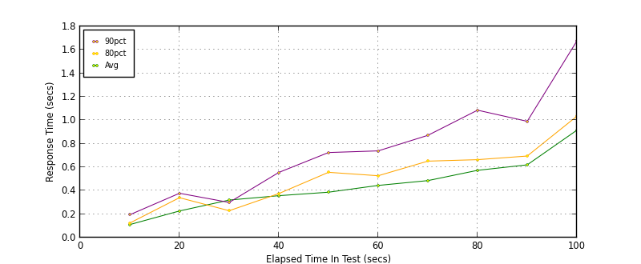
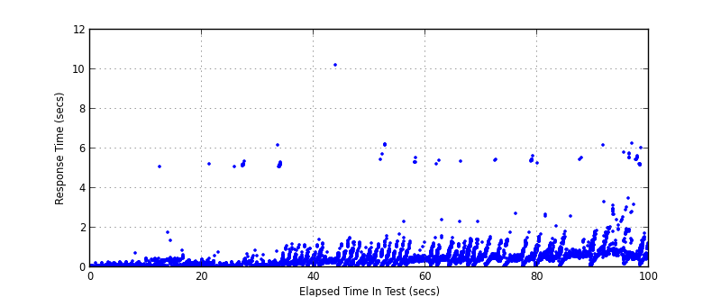
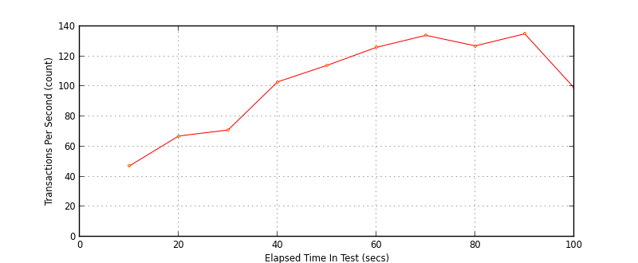

Performance Results Report
Summary
transactions: 10393
errors: 0
run time: 100 secs
rampup: 100 secs
test start: 2013-05-03 13:36:12
test finish: 2013-05-03 13:37:52
time-series interval: 10 secs
workload configuration:
| group name | threads | script name |
|---|
| user_group-1 | 100 | createCustomer.py |
All Transactions
Transaction Response Summary (secs)
| count | min | avg | 80pct | 90pct | 95pct | max | stdev |
|---|
| 10393 | 0.055 | 0.481 | 0.607 | 0.860 | 1.182 | 10.212 | 0.607 |
Interval Details (secs)
| interval | count | rate | min | avg | 80pct | 90pct | 95pct | max | stdev |
|---|
| 1 | 474 | 47.40 | 0.057 | 0.111 | 0.124 | 0.195 | 0.249 | 0.722 | 0.070 |
| 2 | 678 | 67.80 | 0.068 | 0.227 | 0.340 | 0.378 | 0.409 | 5.106 | 0.231 |
| 3 | 718 | 71.80 | 0.055 | 0.320 | 0.229 | 0.300 | 0.401 | 5.361 | 0.871 |
| 4 | 1034 | 103.40 | 0.062 | 0.357 | 0.375 | 0.555 | 0.752 | 6.197 | 0.727 |
| 5 | 1144 | 114.40 | 0.058 | 0.387 | 0.557 | 0.725 | 0.979 | 10.212 | 0.387 |
| 6 | 1268 | 126.80 | 0.059 | 0.445 | 0.527 | 0.739 | 1.027 | 6.229 | 0.551 |
| 7 | 1344 | 134.40 | 0.061 | 0.486 | 0.652 | 0.872 | 1.097 | 5.394 | 0.368 |
| 8 | 1278 | 127.80 | 0.055 | 0.573 | 0.664 | 1.086 | 1.261 | 5.627 | 0.668 |
| 9 | 1356 | 135.60 | 0.065 | 0.620 | 0.695 | 0.991 | 1.319 | 5.528 | 0.347 |
| 10 | 999 | 99.90 | 0.132 | 0.915 | 1.035 | 1.676 | 2.021 | 6.294 | 0.900 |
Graphs
Response Time: 10 sec time-series

Response Time: raw data (all points)

Throughput: 5 sec time-series
